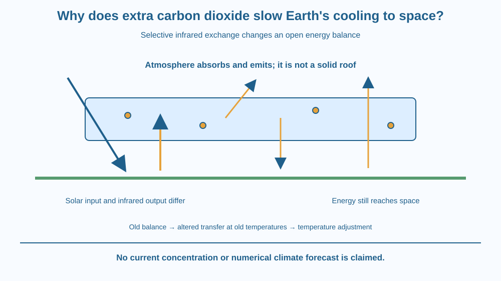

Explain how additional carbon dioxide changes Earth's outward infrared energy transfer. Distinguish absorption, atmospheric emission and permanent trapping. Connect an initial energy imbalance with warming toward a new balance without claiming that every incoming solar ray is blocked or that energy is created.
Earth receives energy from sunlight and emits energy toward space. If the incoming sunlight is held approximately fixed in a simplified comparison, why can adding a small atmospheric component affect temperature?
The outgoing pathway matters as much as the incoming one. Carbon dioxide interacts with particular infrared wavelengths emitted by the surface and atmosphere. Changing those interactions alters how readily energy reaches space under the existing temperature structure.
The useful model is a flow and balance, not a sealed greenhouse roof containing an ever-growing pile of heat forever.
Earth's surface absorbs some incoming solar radiation and emits infrared radiation. The atmosphere also absorbs and emits radiation. Different gases interact with different wavelengths, so air is not one uniformly transparent or opaque material.
Carbon dioxide can absorb infrared at particular wavelengths through molecular energy transitions. The absorbed energy can be exchanged with surrounding molecules, and atmospheric CO2 can also emit infrared radiation according to its conditions.
Emission occurs in different directions, including upward and downward. It is misleading to picture every absorbed photon simply bouncing intact straight back to the ground like a mirror reflection. Absorption, molecular interactions and emission form a coupled thermal system.
Increasing CO2 changes the atmosphere's infrared transfer properties. Under the previous temperature conditions, the outward energy reaching space can be reduced in important wavelength regions. Incoming and outgoing energy are then no longer balanced in the same way.
The system gains energy until its temperatures and other responses allow a new balance. A warmer surface and atmosphere emit differently, so warming is not a claim that all heat becomes permanently imprisoned. Energy continues to flow through the system.
One useful extension describes effective emission to space occurring from higher atmospheric regions for some wavelengths when opacity increases. If those regions are colder under the relevant profile, their emission differs. This is a simplified way to connect atmospheric structure with the outward-flux change.
The greenhouse effect differs from the dominant warming mechanism inside an ordinary glass greenhouse, where restricted air exchange can be important. It also differs from stratospheric ozone absorbing ultraviolet. Shared everyday words should not erase the distinct physical processes.
The lesson gives no current concentration, warming rate or forecast statistic. Its target is the mainstream radiation-balance mechanism. Actual climate responses involve feedbacks, clouds, water, circulation and time, so this diagram is not a complete numerical climate model.
Draw an energy account with sunlight entering and infrared leaving. Begin with equal total arrows for a balanced model. Add an atmospheric layer that absorbs and emits selected infrared while allowing other routes to continue.
Increase that layer's relevant opacity without changing the initial temperatures. Show a temporary reduction in outward transfer and mark energy accumulation. Then warm the emitting system in the next panel until the accounting can balance again.
Keep an open space boundary. Energy is delayed or redistributed in the transfer system, not abolished. The model must contain outgoing arrows in every stage rather than pretending greenhouse gases stop all radiation from ever reaching space.
The SVG shows incoming sunlight, surface absorption and outgoing infrared interacting with an atmosphere containing CO2. Upward and downward atmospheric-emission arrows are separate from the original incoming solar path.
A comparison panel starts with fixed sunlight and the previous temperature state, then illustrates the outward-transfer change after added infrared interaction. A later panel identifies adjustment toward a new balance.
The arrows are qualitative and do not assign real watts per square metre or a current temperature. The caption distinguishes selective absorption from a solid roof, complete blockage and the UV mechanism of ozone protection.

Climate explanations in India and elsewhere often use the phrase heat trapping. It can introduce the idea, but the more specific model follows continuous radiation exchange and a changing energy balance.
An everyday hot room or parked vehicle involves several transfer mechanisms and is not a complete model of the planetary greenhouse effect. Analogies should identify what they explain and where they differ.
Students do not need to create carbon dioxide, heat sealed containers or expose objects to intense sunlight. A paper energy account isolates the relevant infrared mechanism without a misleading home experiment that changes several conditions at once.
Use paper and two colours for solar and infrared energy arrows.
Label the diagram qualitative. Arrow counts are not actual measured energy flows. Ask a partner to check that your model neither creates energy nor removes every outgoing path. Do not interpret the sketch as a numerical climate prediction.
Why is no outgoing radiation a poor greenhouse model? Explain how the system can warm while continuing to lose energy to space.
Now compare a perfectly reflecting mirror with an absorbing and emitting gas. What differs about the direction and physical processing of radiation? This distinction replaces a simplistic photon-bounce story with a more accurate thermal exchange account.
Which outgoing radiation is central to the CO2 greenhouse mechanism?
Answer: A — CO2 interacts with particular infrared wavelengths in the outgoing thermal-transfer system.
Why can adding CO2 create an initial imbalance?
Answer: C — Changed infrared interactions can reduce outward transfer before the temperature structure adjusts.
A cartoon shows all heat trapped forever under a solid atmospheric roof. What needs correction?
Answer: B — The atmosphere absorbs and emits selectively rather than acting as a total permanent barrier.
Create a three-stage energy-balance explanation: initial balance, added infrared interaction at the old temperatures and adjustment toward a new balance. Keep the incoming-sunlight assumption explicit.
Include two corrections to common cartoons, such as a solid roof and permanently trapped heat. Your conclusion must avoid invented present-day statistics and distinguish CO2 infrared behaviour from ozone's ultraviolet role.
Changing the route out can change a system's temperature even if the route in is initially unchanged. This principle is broader than climate, but its planetary form depends on wavelength-specific radiation and atmospheric structure. The temperature response belongs to the whole energy account, not one isolated molecule producing extra heat.
Additional CO2 alters outgoing infrared transfer, creating an imbalance under the old conditions; warming changes emission toward a new balance while energy continues to escape.